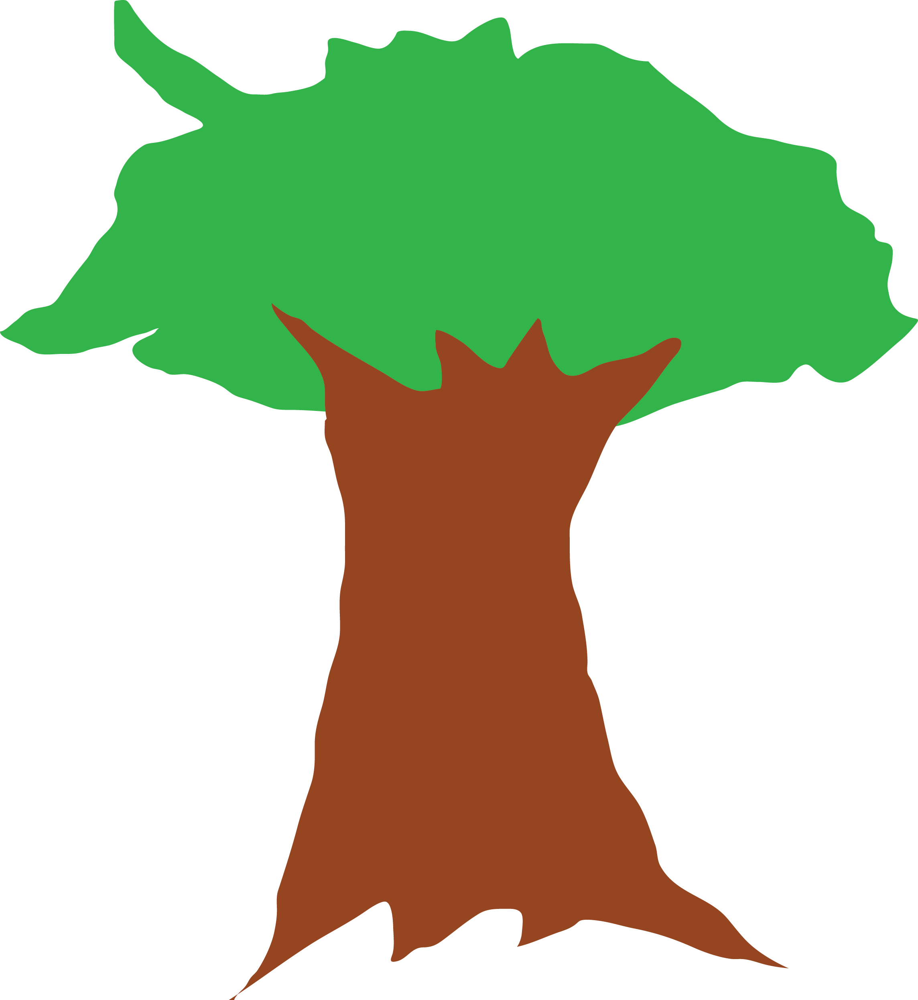
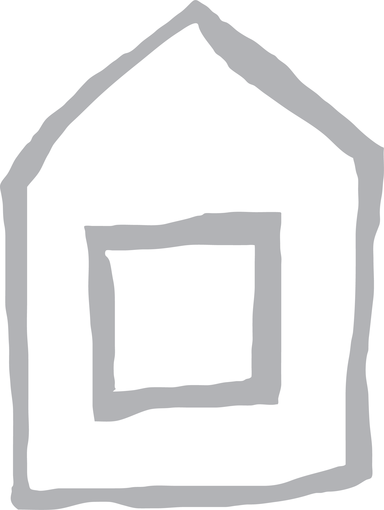
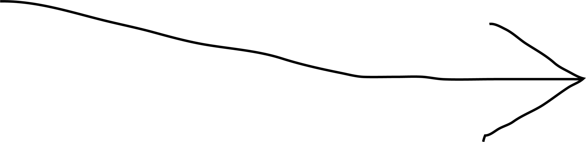

BACKBONE
DCU FINAL PROJECT FILM
INSPIRATIONS

Mustard Seed Soup Kitchen

Dublin Homeless Awareness
Inspirations
One of the good news that can be shared about the current homelessness climate in Dublin is of the strong communities that have developed that reflects on the history of how he people have cared for the homeless - different charities of both yound and older generations have continued to come together as a community to help those in need.
Inspired by organisations such as the Dublin Homelessness Awareness, Mustard Seed Soup Kitchen and others like the Peter McVerry trust have given us the insight that was required to display how people that volunteer are doing their best to contribute in ways that they can, and they all share a common message in that they couldn't appreciate enough for any contributions that goes their way.
Pictures


GALLERY
DCU BACKBONE
FINAL PROJECT FILM